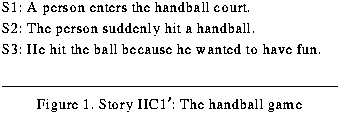

Table of Contents
Table of Contents
 Previous Chapter
Previous Chapter
Table of Contents
Previous Chapter
Humans are amazing in their seemingly effortless ability to learn, yet the objects of learning are quite constrained. For instance, people do not seriously entertain the above analogy that trees are like dogs with bark instead of fur. Furthermore, when most observers read that a dog barks at luggage, they do not infer that the luggage must have been animate, even if the reader has never seen a dog bark at inanimate objects.(2) Instead, if they find the passage odd, they will either implicitly or explicitly question their knowledge of the objects at which dogs bark. One reason for these predispositions is that humans are limited to particular learning spaces.
Children learn very specific conceptual categories of objects in the natural world, such as the distinctions between animate objects, inanimate objects, and functional objects or devices (Keil, 1981, 1989), and they are constrained in the acquisition of word meanings (Carey, 1986). When reasoning and learning, not all possible inferences are warranted or entertained, unlike the approach used in a resolution theorem-prover (e.g., AQ3, Green, 1969). Computational complexity theory has shown that the poverty of stimuli is so pervasive that, for systems to learn at all, they must restrict the kinds of learning that are possible (Osherson, Stob, & Weinstein, 1989; Wexler & Cullicover 1980, both cited in Pylyshyn, 1991). Moreover, Mitchell (1980/1990) argues that to induce anything other than a conjunction of all examples in a learner's experience, a learner must possess a learning bias. That is, complex learning is biased toward certain results and only certain learning goals are possible.
The previous chapter presented a taxonomy of learning goals used to provide focus and to keep the learning process tractable. As cognitive science research addresses more sophisticated task domains and as more learning algorithms become available, the associated learning problems become increasingly complex. This focus therefore provides a valuable function. Yet the task of integrating multiple learning methods remains a daunting one because it is an open question as how best to combine the often conflicting learning-methods. This chapter investigates the metaphor of goal-driven planning as a tool for performing such integration. Learning is essentially viewed as solving a planning problem. The planning problem is formulated by posting learning goals (such as the goal to reconcile two divergent assertions with which Meta-AQUA was left at the end of the last chapter) that, if achieved, accomplish some desired change in the system's BK. In response, the learner assembles a learning plan or strategy by choosing and ordering learning methods from its repertoire.
This chapter examines the kinds of interactions that may occur during such construction tasks and how they are managed in the Meta-AQUA system. The example started in the previous chapter (originally from Section 2.1.1) is continued in order to illustrate these interactions. Section 7.1 discusses the issue of whether blame assignment is better directly coupled with learning or mediated with learning through the arbitration of learning goals. Section 7.2 shows how learning strategies can be constructed using nonlinear planning techniques. This section also continues with the Meta-AQUA example examined in the previous chapter. Section 7.3 briefly discusses how learning plans are executed and comments on the usefulness of nonlinear plans. Section 7.4 takes a closer look at the planning metaphor used by the theory of Introspective Multistrategy Learning. Finally, Section 7.5 summarizes and then concludes by briefly discussing related systems, limitations with Meta-AQUA, and areas for future research.
The approach of Owens (1990a, 1990b, 1991, 1993) to blame assignment and learning (repair) is very similar to the one presented here. To perform these two tasks in the domain of planning, Owens uses a knowledge structure called a Plan Failure eXplanation Pattern (PFXP). PFXPs are declarative representations for planning failures, each of which is related to a parable such as too many cooks spoil the broth but represented in abstract form. They organize high level information about an anticipated problem, lower level details concerning what causes the problem, how to fix it if it happens, and how to learn from it when it occurs. The structures therefore encapsulate and tightly couple the explanations of failure with those methods used for both plan recovery and plan repair.
Like a Meta-XP, a PFXP is a causal pattern that assists in blame assignment given some symptom of failure. A Meta-XP is a causal structure that connects the symptom to causal factors from the taxonomy of failure causes from Chapter III; whereas, a PFXP is a causal structure that connects a symptom to bad planning decisions such as inappropriate plan transformations. Like Meta-AQUA, Owens' planning system, ANON, uses a characterization of failure to retrieve a PFXP that is used to do blame assignment. Thus, both systems use a case-based method of performing blame assignment. However, unlike Meta-XPs that are organized by theoretical and structural considerations stemming from the underlying models of cognition,(3) PFXPs are organized by the functions they are designed to perform (i.e., by the kinds of recovery and repair operations that will be performed with them). A functional theory (Birnbaum, 1986; Schank, Collins & Hunter, 1986) of blame assignment and learning specifies that a taxonomy should be partitioned depending on what a reasoner does with a member of a category (Owens, 1991). The philosophy of tight coupling (Hammond, 1989; Owens, 1990a, 1990b) dictates that the explanation of failure be closely bound to the repairs and recovery strategies used with the failure. Thus, knowledge used in blame assignment, repair and recovery is cemented into one representation. Tight coupling has a problem, however: repair strategies can interact negatively during learning.
Once blame assignment determines an explanation of the fault, given the symptom, a learner must be able to construct a strategy with which to repair the fault. Because a number of faults may occur (corresponding to one or more symptoms), many learning methods or algorithms may be required to repair the knowledge of the reasoner. Just as in blame-assignment, direct linear mappings could be preassigned so that each fault is tightly coupled with one or more repair methods. A large table could implement such a solution by organizing the many-to-many mappings from algorithms that apply in many situations to situations in which a number of algorithms may be relevant (see Table 8). The resulting learning strategy would be an ordered sequence of algorithms selected from the table.
Using this associative matrix technique, a learning system can not only construct a strategy by simply choosing items from the table, but can also optimize the resources expended on the learning. For example, given faults from situations numbered 2 and 3 below, algorithms numbered 1 and 3 can be selected to solve the respective learning problems. Time and effort can be saved, however, if algorithm number 2 is selected instead, because it provides a repair for both situations.
 Table 8: Matrix associative-solution to strategy construction
Table 8: Matrix associative-solution to strategy construction
-------------------------------------------------------------------------
Situation Situation Situation Situation ..... Situation
1 2 3 4 M
-------------------------------------------------------------------------
Algorithm 1 X X
Algorithm 2 X X
Algorithm 3 X X
:
Algorithm N X
-------------------------------------------------------------------------
This type of a solution has been used in a number of theories. For example, CHEF uses configurations of goal failures to directly map to strategies for plan repair (Hammond, 1989), whereas, the TWEAKER module of SWALE uses a taxonomy of XP failure types to directly map to strategies that repair XPs (Kass, 1986). Both systems use direct mapping (indexing) techniques to associate particular failure characterizations to specific repair methods. For instance, the SWALE program explains the unexpected death of a healthy thoroughbred using the "Jim Fixx" XP. Jim Fixx was a world-class athlete who died of a congestive heart failure while jogging. When applying the XP to the death of Swale, the XP fails because it expects Swale to be a human jogger. The failure type NORMATIVE-FILLER-VIOLATION points to a repair strategy that adapts the old explanation to fit the current situation and stores the new explanation for similar future situations (Kass, 1986).(4)
The use of PFXPs improve on this tactic by using the direct mapping approach from an explanation of failure to a repair strategy, rather than from the symptoms of failure to the repair strategy. Moreover, Owens' use of explanation patterns for blame assignment is an improvement over discrimination nets (e.g., Redmond, 1992) when mapping from symptom to fault (explanation of symptom). But although the principle of tight coupling is useful during blame assignment, it presents problems during learning-strategy selection or construction when multiple faults occur.
The issue involved with using a direct-mapping solution for the learning-strategy construction problem is that repair methods may actually interact in such a manner that one method negatively affects the outcome of another. It is unreasonable to assume that all learning algorithms are functionally independent, especially considering that they were designed and implemented in isolation without regard to integration issues. Therefore, when a learner chooses two or more repair methods, the order of the methods may have an undesirable effect on the results of learning. Analogous problems have certainly been shown to exist with respect to intelligent planners; this section demonstrates that the same type of problems occur with multistrategy learning, and so a loose coupling is preferred.
Even if a system's goals to learn are implicit in the behavior of the system rather than explicit, because numerous faults may co-occur, the repairs chosen to correct the faults are bound to interact in ways that are difficult to predict. In formulations with conjunctive goals, numerous difficulties arise such as goal interactions, protection intervals, and many-to-many relationships between goals and algorithms. For instance, a familiar goal conflict in planning systems is the "brother-clobbers-brother" goal interaction (Sussman, 1975) whereby the result of one plan that achieves a particular goal undoes the result or precondition of another plan serving a different goal. If a learning goal specifies a state change to the background knowledge of the system, rather than a state change in the world, then learning plans can have similar effects. Changes to specific knowledge may affect previous changes to the background knowledge performed by other learning algorithms. For example, any change to a conceptual attribute must occur before a separate algorithm uses that same attribute in index learning, otherwise the index might become obsolete.(5)
Therefore, the tight coupling approach used with PFXPs has significant disadvantages. A PFXP must contain not only pointers to the repair strategies that are relevant to particular failure patterns, but it must also contain information concerning how these strategies are interleaved. The issue must also be addressed concerning what happens when two or more PFXPs both apply (e.g., how is the learning managed when both too many cooks spoil the broth and you can catch more flies with honey than you can with vinegar apply to a given situation). If the interactions involved are captured in more complex PFXP types and if the researcher does not anticipate all of them, then the burden of acquiring these composite patterns is upon the learning system. Such interactions are managed naturally with a nonlinear planner when only the constituent failure types and the associated learning goals are specified by the researcher.(6) Even if the tight coupling approach can acquire information about interactions, such a system must dynamically monitor its learning for goal violations (a process that is explicitly performed by standard planners).
The next section presents evidence from a hand-coded example to show that nonlinear planning techniques can eliminate the negative effects present from interacting learning methods. This lends support for the position that to include a separate learning stage that posts explicit learning goals (i.e., that decides deliberately what to learn) is an improvement over learning systems that do not use such an intermediate stage. Chapter IX presents a more careful empirical study which reaches the same conclusion.
The strategy-construction stage of learning builds a learning plan to achieve the learning goals posted by the stage that decides what to learn. The construction entails not only choosing and ordering the algorithms and operators to achieve the learning goals, but if needed, it implies spawning subgoals for learning goals that cannot be achieved directly.
An important issue in the strategy-construction problem is the manner in which learning plans are created (Hunter, 1990b; Redmond, 1992). There are two approaches to this issue: a system can have either a static or a dynamic planner. A static planner simply uses the characterization of the learning goal and the context (explanations produced by the blame assignment phase) as an index into a memory of stereotypical plans. Once retrieved, a learning plan is instantiated and parameterized by the context, and then executed. More flexible and complex, the dynamic approach performs goal-subgoaling to produce plans rather than simply using canned or hand-tailored plans. The approach here is to use the dynamic method.
This section examines the strategy-construction problem by first discussing how a nonlinear planner handles goal interactions (Section 7.2.1) and then by looking at how this is accomplished in a small domain such as the blocks world (Section 7.2.2). Subsequently, the section returns to the drug-bust example to see how Meta-AQUA performs the same tasks, but in the space of changes to the BK using learning goals. The last chapter showed how Meta-AQUA spawned two such learning goals. This chapter shows how plans can be constructed for the knowledge differentiation goal (Section 7.2.3) and the knowledge reconciliation goal (Section 7.2.4). The next major section (Section 7.3) briefly discusses how these plans are carried out.
Hierarchical non-linear planners like NOAH (Sacerdoti, 1975) and Nonlin (Ghosh et al., 1992; Tate, 1976) are designed for the task of noticing the interactions between cognitive processes. A hierarchical planner creates an abstract plan to achieve a conjunction of goals and then successively refines the steps until the plan terminates in primitive actions that can be directly executed. The planning technique is nonlinear because it uses a least-commitment approach that assumes all steps can co-occur unless otherwise required. For this reason, steps in the plan may follow a partial order, rather than a full linear order. Two steps will be placed in a particular order with respect to each other, if and only if they conflict or interact in some (positive or negative) manner.
The Task Formalism language of Tate (1976) specifies that schemas are of two basic types. Operator schemas (opschemas) define planning operators and action schemas (actschemas) define actions in the representation hierarchy of a given domain. An opschema captures the way in which a goal is achieved, whereas an actschema represents the effect of an action in the representation. Each schema is represented with the following basic attributes (fields).
todo field is a pattern to be matched when expanding an abstract step into a refined form. When a pattern is matched it is replaced with the steps in the expansion field.
expansion field lists a partially ordered sequence of substeps to accomplish the goal in the todo field.
orderings field specifies any ordering enforced on the steps in the expansion field.
conditions field determines when a matched schema is applicable. Four types of conditions exist (precond, unsuperv, use-when, and use-only-for-query) as explained below.
effects field determines the effects of the operator or action in the manner of STRIPS (Fikes & Nilsson, 1971). It contains an addlist and a delete list which creates new states and removes old ones from the environment respectively.
The conditions field of an action or operator definition are used to establish the states under which the schema should be used. The precond condition type is equivalent to Tate's supervised conditions and are the standard notion of a plan precondition. They specify the previous states that need to exist before the planner applies the schema. If the states do not exist, then the planner creates a subgoal to achieve them. The use-when condition is also called a filter condition, and was termed a hold condition by Tate. Converse & Hammond (1992) call them appropriateness conditions and directs special attention to the distinction between them and normal preconditions above. They represent the conditions that should exist for the schema to apply to the current needs of the planner, rather than simply those conditions that must exist for the operator to be used. Unsupervised conditions are specified as type unsuperv. They are used to place a linear order on plan steps, rather than expand steps. Finally, the use-only-for-query type of condition is used to bind variable temporarily.
As an example of interacting goals, consider the state of Figure 61 when a planner is given the goals of arranging block A on block B and block B on block C. To place A on B, block A must first be clear and then it is moved on top of block B. To achieve the goal of B on C, B only need be moved. However, if the order chosen is to move the block B first, then the act of clearing A in preparation of its move to B will undo the goal state of having B on C. Therefore, the order of achieving the two initial goals are important because the results of the operations used to carry out the plans do interact.
Figure 61. The Sussman anomaly
Figure 62 contains the Task Formalism definitions for the operators and actions that stack blocks and that manage interactions such as the one discussed above. Given the goals (on A B) and (on B C), a planner will match the todo pattern of operator makeon. Note that to achieve the goal, the planner will replace the goal with the steps in the expansion field of the operator. These steps are partially ordered so that both steps one and two must come before step three, but the operator assumes that both the first two can be executed in parallel. It is only when the planner discovers the interaction between steps to achieve these goals, that one order will be chosen over another.
Figure 62. Blocks world operators
Using these same principles, the research here has defined operators for learning methods that solve learning goals in the BK, rather than object configuration goals in the blocks world. Instead of primitive steps that are assumed to be implemented by a robot arm (e.g., the puton-action step of schema puton), the primitive steps of learning operators represent calls to standard learning algorithms. The following section makes this analogy more clear by returning to the drug-bust example started in the previous chapter.
Blame assignment during the drug-bust example retrieved an IMXP that explained the faulty explanation for why the dog barked at the luggage in the airport. Instead of barking because it was threatened by the luggage, the dog barked because it detected contraband in the luggage. The system then spawned two learning goals: G1, a knowledge reconciliation goal, and G2, a knowledge differentiation goal (Figure 63). The learner thus must reconcile the input (previously believed to be faulty) with its conceptual definition of dog-barking, and it must differentiate the two explanations so that neither is confused for the other.
Figure 63. Abstracted IMXP with learning goals
Consider the knowledge differentiation goal, G2, of Figure 63. It seeks to differentiate between the expected explanation that the dog barked because it was threatened and the actual explanation that the dog barked because it detected contraband. This goal can be achieved by reindexing the memory locations for the two explanations so that they will be retrieved when appropriate. However, because the system has no prior experience with the actual explanation, A2, (and thus the system neither foresaw nor considered the explanation), the learner posts a subgoal to expand the instantiated explanation (i.e., the knowledge expansion goal G3) to produce the missing explanation pattern, M´.
The schemas that produce the subgoal sequencing of events are defined in Figure 64. The use-when conditions on the index-xp operator guarantees that this schema is chosen only if the variable ?x is both an XP and is a token (instance) rather than an type (abstract explanation). The gen-op operator does not actually decide which algorithm to perform the generalization; the do-generalize action schema does. Explanation-based generalization (EBG) (DeJong & Mooney, 1986; Mitchell, Keller & Kedar-Cabelli, 1986) can be selected as an appropriate learning algorithm for this task.
Figure 64. Schema definitions to index an XP
A more difficult problem is to differentiate the applicability conditions for the two abstract explanations (M´, the one produced by generalizing the detection explanation, A2, and M, the original XP that produced the initial threaten explanation, E) by modifying the indexes (I´ and I) with which the system retrieves those explanations. If the two problems of erroneous association and novel situation were to be treated independently, rather than as a problem of interaction, then an indexing algorithm would not be able to ensure that the two explanations would remain distinct in the future. That is, if the learner simply detects a novel situation and automatically generalizes it, then indexes it by the salient or causal features in the explanation, and if the learner independently detects an erroneous retrieval, and re-indexes it so that the same context will not retrieve it in the future, then there is no guarantee that the resultant indexes will be mutually exclusive. Instead, the system must re-index M with respect to M´, not simply with respect to the condition with which M was retrieved. Therefore, the problems associated with direct mapping from blame assignment to strategy construction without the mediation of learning goals are substantial.
The problems to be solved, then, are determining the difference between M and M´, and, in the light of such differences, computing the minimal specialization of the index of M and the maximally general index of M´ so they will be retrieved separately in the future. In the case of the drug-bust story, HC1, the problem is somewhat simplified. The difference is that retrieval based on the actor relation of barking actions (dogs) is too general. The threaten explanation applies when dogs bark at animate objects, while the detection explanation is appropriate when dogs bark at containers.
Figure 65 "Mutual-indexing schemas" shows learning-operator definitions for the indexing strategy that manages mutual indexing between two concepts. The operator schema determines that both items must be independently indexed before they are indexed with respect to each other. The action schema has filter conditions (use-when) that apply when both are indexed and both are XPs. An unsupervised condition (unsuperv) specifies that if there exists a change in the explained action, then it must occur before the execution of this schema. That is, a linearization must be performed on external goals to reorder any other schema that may establish the change. It says in effect that we want all attributes of the target concept to be stable before it operates on the concept; no other operator can change an attribute in order for the changes performed by indexing to be unaffected.
Figure 65. Mutual-indexing schemas
In Figure 63 on page 163, the remaining learning goal, G1, represents a knowledge reconciliation goal. The goal is to reconcile the fact that the conceptual definition of dog-barking is limited to animate objects with the fact that a particular dog barked at a piece of luggage. This goal can be thought of as a simple request for similarity-based learning (SBL) or inductive learning (e.g., UNIMEM's SBL algorithm in Lebowitz, 1987, or abstraction transmutation as in Michalski, 1994). The system is simply adding an additional positive example to the instances seen. An incremental algorithm is required because this instance has been discovered after an initial concept has been established some time in the past.
An interesting interaction can occur, however, if the system waits for the result of the EBG algorithm required by the knowledge-expansion subgoal spawned by the knowledge-differentiation goal discussed above. The algorithm will generalize the explanation (that this particular dog barked at a particular piece of luggage because it detected marijuana) to a broader explanation (that dogs in general may bark at any container when they detect contraband). Thus, the example provided to the inductive algorithm can be more widely interpreted, perhaps allowing its inductive bias to generalize the constraint, C, on the object of dog-barking to physical-object (the exhaustive case of animate-object and inanimate-object), whereas a single instance of a particular breed of dog barking at a specific brand of luggage, A1, may limit the inductive inference if no additional domain knowledge is available.
Unfortunately, however, because the EBG algorithm uses the representation of the dog-bark definition, and the inductive algorithm changes this definition, the induction must occur first. Thus, the system cannot take advantage of the opportunity cited in the previous paragraph. One important implication of this point is that in systems which plan to learn, if the reasoner does not anticipate this second interaction (thus placing EBG before the induction), the system must be able to perform dynamic backtracking on its decisions.
Like a non-linear planner in the blocks world, the learning system must detect any dependency relationships so that goal violations can be avoided. For example, when the definition of dog-barking is modified by generalizing the constraint on the objects at which dogs bark from animate-object to physical-object, any indexing based on the modified attribute must occur after this modification, rather than before it, to avoid indexing with obsolete conceptual knowledge.(7)
Note that the action schema of abstraction in Figure 66, "Abstraction schema," has an addlist and delete list effect that modifies the changed predicate on the domain of the constraint relation. This effect, along with the unsupervised condition of the do-mutual-xp-indexing action schema of Figure 65, determines that the indexing will not be performed until the constraint becomes stable. Therefore, if both schemas are being instantiated, the Nonlin module of Meta-AQUA will automatically order the abstraction before the indexing. A similar unsupervised condition prevents generalization of the detection explanation from occurring before the concept of dog-barking is stable.
After a learning plan is constructed, a very simple process can execute the plan. All primitive steps in the plan are calls to learning algorithms from the toolbox. Because the plans are partially ordered, not all steps will have a linear order enforced. Therefore, some steps may be executed in parallel. In the drug-bust example, however, the final learning plan Meta-AQUA constructs is fully ordered. As shown by the Nonlin output in Figure 67, the resultant steps are (1) perform an abstraction transmutation on the concept of dog barking (realizing that dogs bark at containers); (2) perform EBG on the new explanation (producing a generalized version); (3) index the generalized XP in isolation; and finally, (4) use the new concept definition to mutually differentiate and index the two generalized explanations of why dogs bark. This plan is translated back into a frame representation and executed in the order specified.
Figure 67. Nonlin output and the final learning-plan
After the learning is performed, control is returned to the story understanding module. The system continues with the story until completion. In subsequent stories (or as will be seen in the next chapter, even within the same story), the same types of failures should not repeat if the learning is successful. For example, after Meta-AQUA finishes reading story HC1, it can understand the story in Figure 68 correctly. In this story a police officer and a canine enter a suspect's house, the dog barks at a garbage pail, and the suspect is arrested for possession of some marijuana found in the pail. The new story causes no anomaly when the dog barks at the inanimate container. Indeed, Meta-AQUA expects some type of contraband to be found in the container after it reads that the dog barked, but before it is told of the contraband's existence in the story. Thus, learning accomplished in the previous story improves both understanding of and predictions for subsequent stories.
Figure 68. Story HC3: Another hidden stash
The idea of applying the metaphor of goal-directed planning to learning tasks presents a number of interesting research issues. The planning community has investigated problems of goal interaction, uncertainty, strategy selection, error recovery (including backtracking during the planning process and rollback during plan execution), and concurrency. In one form or another, all of these issues reappear given a learning interpretation. Broadly construed, the technique of nonlinear planning in the pursuit of explicit goals can be directly mapped to learning. Instead of desired states in the world, learning goals represent desired states in the background knowledge of the learner. Instead of operators that result in actions performed by agents, learning operators result in actions by learning algorithms.(8) However, at a finer level of granularity the metaphor may not map so neatly. For example, this research has established that the brother-clobbers-brother goal interaction is present in some situations during multistrategy learning; yet, it is not immediately apparent whether or not all types of goal interactions from the classical planning literature will apply to operators executing in the background knowledge. Therefore, one of our future research goals is to more fully determine where the planning metaphor fits a learning framework and under what conditions it does not.
Moreover, the learning performed by Meta-AQUA is not tied to either the task of story understanding or the domain of criminal activities. By adding a few conceptual definitions for a new domain, Meta-AQUA processes and learns from the following story that parallels story HC1 of Section 7.2.
 Figure 69. Story HC1´: The handball game
As before, S1 is skimmed and, because Meta-AQUA believes that people hit animate objects, S2 generates an anomaly. It explains the anomaly by concluding that the person is trying to hurt the ball. When given a new explanation, Meta-AQUA generalizes it, indexes the new explanation with respect to the hurt explanation, and loosens the constraint on the object of hit to include toys as well as animate objects. Meta-AQUA uses the same Meta-XP as a pattern of failure and guide to learning as in the previous story.
The planning and problem-solving literature suggest that use of explicit goals have many benefits over ad hoc processing. Many of these benefits apply to leaning-goal processing as well as standard-goal processing. Some of the advantages of using learning goals to mediate between the blame-assignment and strategy-construction stages are as follows:
For a given failure there may be more than one algorithm which needs to be applied for learning. Conversely, a given algorithm may apply to many different types of failures. A direct mapping from blame or fault to algorithm choice is more difficult and less flexible than the use of learning goals.
It is not always guaranteed that sufficient resources and/or knowledge are available to perform learning at the time that a system realizes that it needs to learn. When this condition occurs it is possible to index the learning goal in memory so that it can be retrieved at a later time when these requirements are met.
For example, one algorithm may achieve two or more goals, whereas in other cases, many strategies may apply to a single goal. If more than one plan applies, a system should use the one which may contribute to the maximum achievement of other goals with the minimum amount of resource consumption.
As described by this chapter, it is important to recognize that when multiple items are learned from a single episode, the changes resulting from one learning algorithm may affect the knowledge structures used by another algorithm. Such dependencies destroy any implicit assumption of independence built into a given learning algorithm used in isolation. For example, the definition of dogs barking is modified by Meta-AQUA so that its constraint on those objects at which dogs bark is generalized to physical-object from animate-object. However, any indexing based on the attribute associated with the objects of barking dogs must occur after this modification, rather than before it, to avoid indexing on obsolete conceptual knowledge.
Because nonlinear plans specify a (minimal) partial ordering of steps, learning algorithms may be executed concurrently if no ordering is imposed between two or more steps by goal interactions or subgoal refinement. The issue of concurrent execution of learning algorithms is virtually unaddressed in the machine learning community, but potentially of great computational benefit. We raise the issue here, but the full exploration of such opportunities awaits further research.
This chapter has covered a number of diverse issues relating to the problem of learning-strategy construction. Converging evidence argues that the learning task can successfully be treated as a nonlinear planning task. The first section of the chapter debated that a loose coupling between blame assignment and learning is preferred over tight coupling. The next section explained how a nonlinear planner can perform this function, given the example from the last chapter. Subsequently, a section explained how learning plans are executed. Finally the advantages of using the metaphor of planning was enumerated.
In review, a number of important knowledge dependencies were illustrated using the drug-bust example. These are enumerated below.
Introspective reasoning is crucial to detecting these dependencies. Although many computational systems use a reflective reasoning approach (e.g., Collins, Birnbaum, Krulwich, & Freed, 1993; Fox & Leake, 1994; Oehlmann, Edwards, & Sleeman, 1994; Plaza & Arcos, 1993; Stroulia & Goel, 1995), and a few have used the planning metaphor in learning (Hunter, 1990b; Quilici, in press; Ram & Hunter, 1992; Ram & Leake, 1995; Redmond, 1992), none of these systems have applied the planning metaphor as strictly as Meta-AQUA has; none execute a planner like Nonlin upon its own knowledge. One important implication of this approach is that nonlinear learning plans can take advantage of the inherent parallelism associated with learning problems. As machine learning algorithms increasingly enter the applied world, the need for parallelism will become evermore important. Future research will better illuminate the potential of this insight.
Additional future research must be directed toward incorporating more learning strategies. One of the weak points of the current system is that it reasons during learning at a macro-level. Meta-AQUA recognizes the functional difference between generalization and specialization and therefore can choose an appropriate algorithm based on which algorithm is most appropriate. However, it cannot currently select between competing algorithms that both perform generalization. Meta-AQUA does not reason at the micro-level, as do systems that address the selective-superiority problem(9) in inductive learning (see, for instance, Brodley, 1993; Provost & Buchanan, 1992; Schaffer, 1993), although the scope of learning problems solved by Meta-AQUA is greater than these other systems.
Another limitation of the Meta-AQUA implementation is that learning self-evaluation (step 3 of Figure 48. "IML learning algorithm" on page 126) does not exist. Thus, Meta-AQUA cannot cross-validate or compare various successful algorithms, nor can it currently judge when learning fails and another algorithm must be chosen. Just as it detects, explains, repairs and learns from reasoning failures, an interesting line of future research would be to allow Meta-AQUA to reason about its own learning. See Leake (1992) for approaches to this problem.
To perform multistrategy learning, an intelligent system must consider a number of factors that are not significant in isolated learning systems. In particular, a system must be able to handle insufficient resources and knowledge and manage dependency relations between learning algorithms at run-time. Many alternative solutions and interactions may occur, even when reasoning about simple situations. Treating the learner as a planner is a principled way of confronting these difficulties. Many of the techniques and results from the planning literature(10) can be appropriated in learning systems to provide a better level of robustness and coverage in situations where many types of failure may occur. The aim is to transform these failures into opportunities to learn and improve the system's overall performance.
Table of Contents
 Next Chapter
Next Chapter